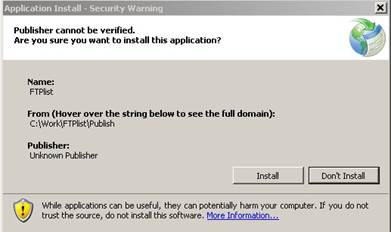
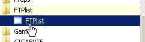
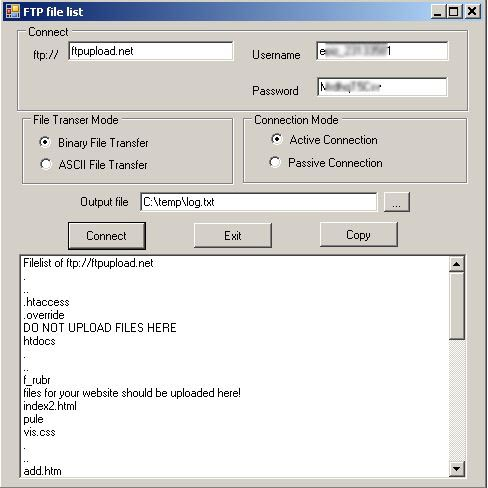
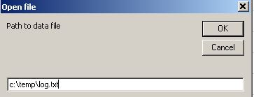
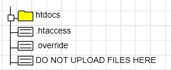
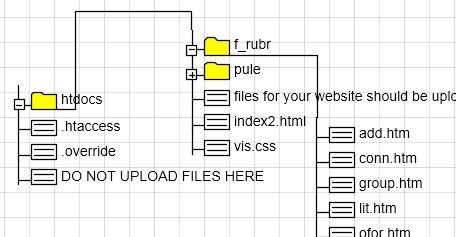

The program provides the FTP site scan and writes data to a text file suitable for use with the Visio TreeView template.
Terms of use:
- Windows 7 or later.
- Authorized access to the FTP site.
For the subsequent automatic charting, you also need: the desktop version of Visio and the Visio TreeView template 2019.
Installation:
- Download archive and unzip the program.
- Run setup.exe.
Windows may display a message about an unknown publisher. This is true, the setup does not contain a code signature. Click Install.

The program will be installed at approximately the following address: ...\AppData\Roaming\Microsoft\Windows\Start Menu\Programs\FTPlist
On different systems, this address may vary.
The shortcut for starting the program will be visible in the "All Programs" menu as "FTPlist" in the future.

FTP scanning
After starting the program, you will see the "FTP file list" window.
Required fields are in the Connect section: server, Username, Password. In addition, you must enter the name of the output file to save the scan results.
Press the Connect key.
The program will scan the site and show the protocol. If necessary, you can save the protocol to the clipboard for further analysis by pressing the Copy button.
The main data file will be saved at the address specified in the "Output file" field.

Output file format
The output file contains 4 columns, separated by commas. An example of the output file is given below:

Using data file in Visio
Launch Visio and create a new document based on the TreeView template.
You will see the "Open file" dialog. Enter the path to the data file and click OK button.

In the first step, you will see folders and files located in the root of the FTP site.

In the future, using the contextual menus of shapes you can open the contents of any folder.

Important links:
FTP scanner for Visio TreeView template in ZIP archive